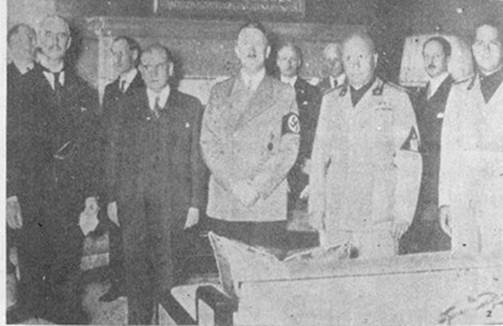
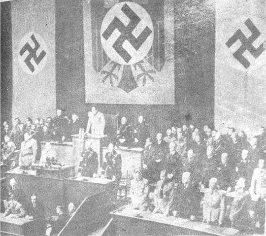
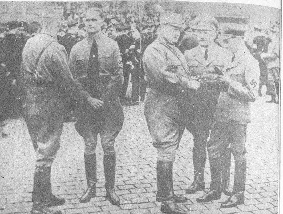
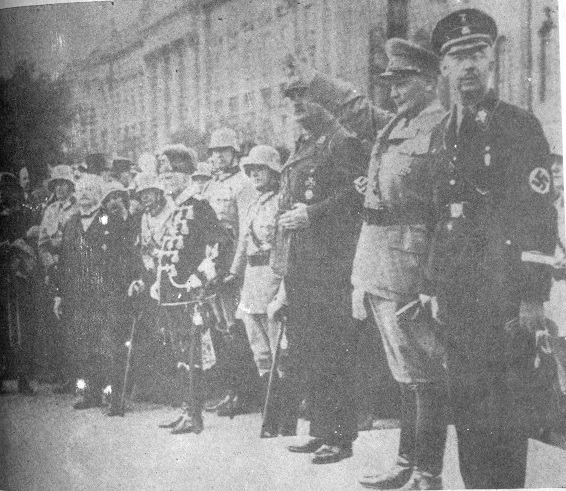
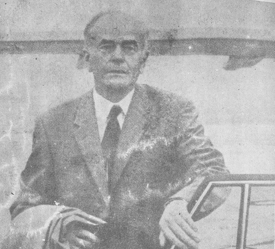
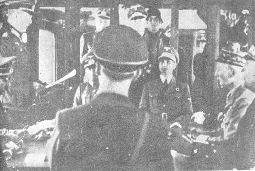

Sáng ngày 26 tháng 4, ba bức công điện của Thống chế Goering, từ miền Nam nước Đức, đánh về đã tới nơi. Nội dung đại khÁi như sau: "Thưa Fuhrer, do một sắc lịnh kÝ năm 1939. Ngài đã chỉ định tôi kế vị Ngài trong trường hợp Ngài không còn có thể điều khiẻn công việc của Quốc gia được nữa, tôi tưởng rằng đã đến lúc tôi nhận lãnh trọng trách ấy. Nếu đến như đêm hôm nay, ngày 26 thảng 4 mà tôi không nhận được một mệnh lịnh nào thì tôi sẽ coi như quyết định nầy đã được sự chuẩn nhận của Ngài".
Tin ấy là một tai vạ thình lình của Hitler. Trước tiên, ông ta khóc rống lên như một đứa trẻ con đoạn bắt đầu gầm thét như một người bị quỷ ám. Ông nhìn thấy ở đó một sự phản bội rõ rệt. Vả lại ông coi bức điện tín ấy như là một tối hậu thư thật sự, đặc tính mà Goering đã hết sức chối cãi trong cuộc biện luận trước tòa án Nuremberg 1. Sự tức giận của Hitler lan tràn ra khắp căn hầm trú ẩn. Chính Goebbels, cũng giận quày mòng mòng đã phát biểu cảm tưởng của mình bằng một loạt những lời tuyên bố cầu kỳ, trong đó các sáo ngữ danh dự, lòng trung nghĩa sự chết, máu, danh dự, Ngài, thưa Fuhrer, bọn họ, thưa Fuhrer và lại danh dự, tuy nhiên chúng các lời nói ấy không che đậy một cách hoàn toàn sự tức giận của ông khi thấy Goering sắp sửa thành công, ít ra ông cũng đã tin như vậy, trong việc rút đầu mình ra khỏi sợi dây thòng lọng. Bormann cũng vậy, ông ta không để mất cơ hội châm dầu vào ngọn lửa đang cuồn cuộn cháy trong Hitler. Ông nầy hạ lịnh cho Gestapo bắt Goering ngay lập tức. "Tống cổ hắn ta vô pháo đài Kufstein!" ông ta hét lớn. Một mật lịnh được thảo ngay. Nếu Hitler chết, Goering phải bị giết luôn.
Ông ta cũng không kém rụng rời, ngày 28 tháng 4 khi hay tin Himmler đã tìm cách bắt liên lạc với Anh - Mỹ qua sự trung gian của Bá tước Bernadotte. Tin này đã được đài phát thanh các nước trung lập loan đi.
Ritter von Greim được chỉ định thay thế Goering và được triệu ngay đến Dinh Tể Tướng bằng vô tuyến điện tín xế chiều cùng ngày, ông ta đã đáp xuống trục Đông - Tây kế cận khải hoàn môn Brandenberg. Chiến công phi thường ấy được thực hiện không phải bởi một vị anh hùng vũ dũng, mà do một phụ nữ yếu đuối mảnh mai, nhà nữ phi hành Hanna Reitsch 2. Sự hạ cánh xuống đã nguy hiểm đến nỗi Von Greim, trước đó một lúc, đã bị một viên đạn bắn trúng vào chân, gây thương tích trầm trọng. Phải khiêng ông ta đến tận hầm trú ẩn, nơi đây ông được giải phẫu ngay tức khắc. Sau vài sự thổ lộ tâm tình ngắn ngủi, ông đi lê lết đến phòng của Hitler. Ông nầy thăng cấp Thống Chế cho ông ngay. Buổi hội kiến kéo dài độ bốn mươi lăm phút. Trong thời gian ấy Hanna Reitsch đứng bên ngoài phòng đợi. Nàng cũng vậy, cũng được Hitler tiếp đón một cách nồng hậu. Người đàn bà nhỏ thó ấy, khá đẹp, ở lại đó, sắc mặt rạng rỡ và trái ngược hẳn với tất cả các đấng mày râu ở chung quanh, nàng không hề biểu lộ một sự lo âu nào. Riêng tôi, tôi cũng đã cảm thấy hết sức xấu hổ cho phái mạnh của mình. Trong khi hầu hết các người sống dưới hầm ẩn trú chỉ còn nuôi những ý tưởng tuyệt vọng, đôi mắt nàng vẫn ngời sáng một sự quả cảm hùng tráng. Ngày hôm sau khi Hitler trao cho nàng một liều thuốc độc, đôi môi nàng khẽ hé một nụ cười.

Ảnh 8:Âu châu nghiêng mình ở Munich (12-3-1938. Từ trái qua phải: Chamberlain ( Thủ tướng Anh - Daladier ( Pháp - Hitler - Mussolini - Bá tước Ciano ( Tổng trưởng Ngoại giao Ý, con rể của Mussolini....
Khi trở về phòng, tôi và Bernd gặp bà Goebbels. Trong thời gian lưu lại hầm ẩn trú Hanna Reitsch thường hay đến chơi với bà. Cho đến lúc cuối cùng, cũng như người nữ phi hành gia, Bà Goebbels không hề biểu lộ một sự lo sợ nào. Nhu mì và thanh lịch, bà bước lên từng hai bậc một cầu thang mà chúng tôi đang đi xuống. Khi gặp bất cứ một người nào, bà luôn luôn mỉm một nụ cười thân mật. Mẹ của sáu đứa con, mà năm đứa hiện đang ở trong hầm ẩn trú với bà, và cùng bị đe dọa bởi một vận số kinh khiếp bà luôn luôn biểu lộ một sức mạnh tinh thần thực sự phi thường khí lực siêu phàm ấy rõ ràng bắt nguồn từ sự tín ngưỡng thần thánh và cuồng nhiệt của bà đối với Hitler. Tín tâm ấy vẫn còn nguyên vẹn chăng? Không làm sao biết được. Điều chắc chắn, đó là bà đã được phấn khích bởi một đại vong chánh trị và xã hội cộng thêm lòng sùng bái mù quáng đối với Fuhrer. Uy lực bi thảm và ghê gớm mà Hitler hành sử trên dân tộc Đức căn cứ vào ảnh hưởng có thể gọi là có tính cách thôi miên, mê hoặc của ông, đặc biệt trên một số rất đông phụ nữ.
Vào khoảng 23 giờ, chúng tôi lại được triệu tập để xem xét tình hình. Tình hình càng lúc càng trở nên nghiêm trọng.
Sáng ngày hôm sau, tình hình đã trở nên tuyệt vọng. Đạn pháo kích rơi không ngớt trên tòa nhà Dinh Tể Tướng. Hầm ẩn trú rung chuyển từng hồi như dưới tác dụng của một trận động đất. Cường độ của cuộc pháo kích, căn cứ trên tiếng động, đã chuyển về phía Potsdamer Platz, khoảng mười tám phút sau giảm bớt. Trong khi tôi hấp tấp mặc quần áo, Bernd đang ngồi ở bàn viết, thình lình ngước mắt lên và nói với tôi: "Anh có biết là Fuhrer vừa kết hôn đêm rồi không? " Tôi chưng hửng và hai đứa chúng tôi phá lên cười. Đoạn chúng tôi nghe thấy giọng nói nghiêm khắc của vị Tư lịnh của chủng tôi vang lên phía bên kia bức màn: "Bộ các anh điên hay sao mà cười như vậy về một chức quyền tối cao của Quốc gia". Một lúc sau, Krebs rời phòng, Bernd giải thích sơ cho tôi biết.
Người đàn bà mà Hitler đã làm lễ kết hôn đêm rồi, sau một mối giao tình kẻo dài từ mười ba năm qua, tên là Eva Braun. Tôi xấu hổ thú nhận rằng cho đến lúc đó tôi không hề biết có sự hiện diện của bà ấy trong căn hầm trú ẩn, dĩ nhiên là tôi chưa bao giờ được gặp. Đó là ái nữ của một viên thanh tra học chánh ở Munich. Bà khoảng ba mươi lăm tuổi và đã quen được với Hitler qua sự trung gian của "Giáo sư" Hoffmann nhiếp ảnh viên riêng của ông này, mà bà là người phụ tá. Hoffmann thuộc vào đám người thân thiết nhứt của Fuhrer từ lúc nắm chánh quyền cho đến khi chiến tranh bộc phát. Ông gả con gái cho Balđur Von Schirach và làm ăn khấm khá nhờ vào tình thân mà Hitler dành cho ông. Ông đã được độc quyền bản chân dung của Fuhrer, và đã kiếm đưọc nhiều chục triệu bạc. Năm 1932, Eva Braun đi theo Hoffmann khi ông nầy tháp tùng Hitler trong cuộc tuần du tuyên truyền quanh Đức quốc, và bà giao du với ông nầy. Tôi hỏi Bernd rằng làm thế nào mà công chúng không hề biết gì về mối giao tình ấy, nhưng chính Bernd cũng không thể trả lời được. Khi Hitler trở thành Tể tướng vào năm 1933, bà ta đã tuyên bố: "Đây là giây phút đau khổ nhứt đời tôi".
Tin tức từ ngoài phố báo cáo về càng lúc càng trở nên tuyệt vọng. Trong suốt gần tám ngày rồi, đàn bà, trẻ con, các người già cả, bịnh hoạn, các binh sĩ đều sống miết trong các hầm nhà bên trong Bá-linh. Cơn khát còn gây ra nhiều sự đau khổ hơn cơn đói nữa. Từ nhiều ngày qua không còn một giọt nước nào nữa. Thêm vào đó còn nhiều đám cháy thường trực và khói lùa vào tràn ngập các căn hầm, cùng với khí trời nóng bức của tháng tư. Các bịnh viện và các hầm nhà trong vùng bị oanh tạc đã từ lâu tràn ngập người bị thương. Hàng trăm ngàn người bị thương, quân nhân và thường dân, ẩn tránh trong các nhà ga và các đường xe điện ngầm.

Ảnh 9: Ngày 7-3-1936, Goering ( Chủ tịch Quốc hội khai mạc khóa họp của Quốc hội Đức xã...Hàng đầu:Hitles - Rudolf Hess - von Newath - Frick - von Blomberg - von Ichwerin - Krosigk.
Thêm một lần nữa, hy vọng lại tái phát trong hầm trú ẩn. Vào lúc 10g30 chúng tôi nhận được bức công điện đầu tiên của Binh đoàn Wenck. Các đội tiền phương của Binh đoàn nầy đã đến được Ferch, trong vùng Tây Nam Postdam. Như vậy sự tiếp hợp dã được tái lập với đoàn quân của Tướng Reimann hãy còn chiến đấu trong thành phố ấy và phòng tuyến của các đon vị Nga đã được đẩy mạnh từ phía Nam cho đến phía Tây Bá-linh bị cắt dứt. Một cuộc giải phóng chớp nhoáng do Tướng Wenck thực hiện đã được nói đến. Song le, đến trưa ông này lại cho biết là quân Nga phát xuất từ vùng Beelitz đã tung ra nhiều đợt tấn công dữ dội vào cạnh sườn của mình. Cho đến chiều tối ông không thể báo về một sự tiến bộ mới nào cả, nhưng báo cáo rằng mình phải tung ra nhiều trận đánh thủ thế gay go. Phần đông chúng tôi hiểu rằng các lực lượng của ông ta quá kém về quân số, không làm sao đủ sức để đánh thẳng về cho đến Dinh Tể Tướng được.
Tinh thần tiêu tán cũng mau lẹ như lúc lên và nhiều người đã đứng bên bờ của sự tuyệt vọng.
Trước buổi họp trưa một lát, lần đầu tiên tôi được thấy Eva Braun. Bà ta ngồi nơi bàn ở phòng đợi với Hitler và rất nhiều người thân cận, và đang nói chuyện một cách hăng say. Hitler chăm chú ngồi nghe. Bà ngồi tréo chân và nhìn thẳng vào mặt người mà mình nói chuyện. Thoáng nhìn, tôi đã để ý thấy bà cỏ khuôn mặt trái xoan, đôi mắt sáng tinh anh và một mái tóc vàng nâu óng ả. Bà mặc một bộ áo may thật khéo làm nổi bật những đường nét thật đẹp. Trên cuờm tay mảnh mai bà đeo một chiếc đồng hồ nạm kim cương. Quả là một người đàn bà đẹp. Song le có một điều gì không được tự nhiên lắm trong cử chỉ của bà, chắc hẳn bà đang cố nén nỗi xúc động, lo lắng trong lòng.
Hitler đứng dậy và chúng tôi theo ông vào phòng họp. Không để ý đến bước tiến của Wenck đã bị chận lại, ông hãy còn bám vào hy vọng khi thấy rằng ông nầy đã đến được Ferch. Bất kể dân chúng đang chết đói, chết khát, chết vì đạn pháo kích ngoài phố, ông chủ trương theo đuổi cuộc chiến. Và chính lúc bấy giờ ông ban mệnh lịnh dã man nhất trong tất cả các mệnh lịnh của ông: vì quân Nga đã nhiều lần dùng đường xe điện ngầm để tiến lên bao vây các vị trí của chúng tôi, nên ông hạ lịnh mở các cửa đập trên sông Spree xả nước vào tất cả các đường ngầm trong vùng phía nam Dinh Tể Tướng, nơi nhiều ngàn người bị thương đang ẩn trú. Nhưng đời sống của họ không có một quan trọng nào đối với ông ta. Tất cả phải bị dìm chết một cách không thương tiếc.
Ông cũng thuận để Binh đoàn IX chiến đấu trên sông Oder và đã bị bao vây từ nhiều ngày qua được di tản chiến thuật về Bá-linh. Binh đoàn này sẽ tiếp hợp với đạo quân của Wenck. Nhưng lịnh ấy đã đến nơi nhận chậm mất ít ra cũng năm ngày. Chỉ có vài toán nhỏ, hoàn toàn kiệt lực và không còn xử dụng được nữa, là sẽ vượt qua được. Bảy ngày sau, trong khi tôi vượt qua các khu rừng trong vùng Treuenbrietzen và Juterbog từ Bá-linh trốn về phía Tây Nam, một cảnh tượng hãi hùng xảy ra trước mắt tôi. Binh sĩ của Binh đoàn IX tử trận nằm sắp lớp hàng hà sa số trong các cánh rừng ấy.
Khi họp xong, bước ra ngoài chúng tôi gặp Hanna Reitsch. Nàng đã hai lần cố tìm cách lên đường với Thống chế von Greim, nhưng hỏa lực trọng pháo của Nga đã ngăn nàng lại.
Sau bữa ăn trưa một lát, người ta trình diện Hitler một thiếu niên mặt mày xanh xao đã diệt được một chiến xa địch. Hitler vừa thốt ra nhiều lời nói kiêu kỳ vừa móc lên chiếc áo lính quá rộng đối với cậu bé một huy chương Thập tự sắt. Đoạn ông gởi trả cậu lại trận đánh vô ích đang diễn tiến trong đường phố của thủ đô.
Tôi cùng Kreytag và Weis trở về phòng và bàn bạc về việc ấy, việc đã làm chúng tôi vô cùng cảm xúc. Chúng tôi là ba sĩ quan đã từng có nhiều sự liên hệ mật thiết với binh sĩ và chúng tôi không quen ẩn tránh trong hầm trong khi người ta đang chiến đấu chung quanh. Đó là một tình huống không thể chấp nhận được. Chúng tôi say mê thảo luận đến nỗi không nhìn thấy Bormann đến và lắng nghe câu chuyện của chúng tôi. Bỗng nhiên, ông ta choàng tay lên vai tôi và Freytag và bước tới giữa hai chúng tôi. Ông ta bắt đầu nói với chúng tôi về đạo binh của Wenck và về sự giải cứu sắp đến của Bá-linh.
Đoạn với bộ điệu khoa trương thường lệ, ông ta nói thêm:

Ảnh 10:Trước khi Đại hội của Đảng Quốc xã khai mạc, các Tổng trưởng của Hitler đứng nói chuyện ngoài đường. Từ trái sang phải:Đại úy Pfeffer (xây lưng - Rudolf Hess - Goering - Julius Streicher - Tiến sĩ Goebbels
"Về phần các anh, các người trung thành với Fuhrer sẽ cùng sống qua với Ngài những giờ phút nghiêm trọng nhứt, sẽ được ban phát cho những chức tước thật cao quí khi trận chiến nầy kết thúc phần thắng về ta, cùng với nhiều điền sản đề tưởng thưởng lòng trung nghĩa của các anh". Nói xong, ông ta nhã nhặn mỉm cười với chúng tôi và bỏ đi với vẻ vững tin. Một cảm giác ghê tởm và giận dữ dâng trào trong tôi. Như vậy, hóa ra chứng tôi chu toàn bổn phận chỉ để mong được ban phát chức tước và đất đai hay sao! Nhưng vào ngày 27 tháng 4 ấy người ta có thể nào nói đến một cách nghiêm túc về một "sự kết thúc vinh quang của cuộc chiến" được chăng! Khi nghe Bormann, Goebbels, Goering hoặc nhiều nhân vật khác trong đám cận thần của Hitler nói chuyện, không biết bao nhiêu lần tôi đã tự hỏi mình rằng: họ có thật sự tin tưởng vào các điều họ nói chăng? hoặc giả đó có phải là sự biểu lộ của một sự dung họp ma quái các sự đạo đức giả, chứng cuồng tự tôn tự đại và một sự cuồng tín phi lý?"
Buổi chiều, vị quân ủy trưởng Bá-linh xin yết kiến Hitler, Bormann, Krebs và Burgdorf lặng lẽ đứng phía sau ông nầy khi Weidling tuyên bố đại khái như sau: Binh đoàn Wenck quá yếu về quân số, cũng như về chiến cụ, chưa chắc có thể trấn giữ được vùng đất đã chiếm được ở phía Nam Postdam chứ đừng nói đến việc mở một con đường tiến thẳng về trung tâm Bá-linh. Tuy nhiên, các lực lượng đang phòng giữ thủ đô hãy còn có thể tìm cách, với nhiều cơ may thành công, đánh trở về phía Tây Nam để tiếp hợp với đạo binh của Wenck. "Thưa Fuhrer - Weidling nói tiếp - đích thân tôi xin đưa Ngài ra khỏi thủ đô một cách an toàn vì trận chiến cuối cùng sẽ xảy ra ở đây và thủ đô sẽ sụp đổ". Nhưng Hitler khước từ đề nghị ấy. Axmann lại nhắc lại vào ngày hôm sau vừa đoán chắc rằng tất cả các đoàn viên của phong trào "thanh niên Hitler" sẽ hy sinh mạng sống của mình để bảo vệ Fuhrer. Hitler cũng lại từ chối.
Khi tin tức loan truyền trong hầm rằng, không còn hy vọng ở Wenck một sự tiếp cứu nào nữa và Hitler đã từ chối tìm cách thoát đi, thì một bầu không khí của phút xử tội cuối cùng bao trùm khắp mọi nơi. Mọi người thử dìm các nỗi lo sợ của mình trong ly rượu mạnh. Người ta vào kho lục lọi tìm rượu và đồ hộp ngon nhứt. Trong khi các người bị thương chết dần chết mòn vì đói khát trong các hầm nhà và các đường xe điện ngầm nhiều người chỉ ở cách chúng tôi có vài thước, trong các căn hầm ở đường Postdamer Platz thì giữa chúng tôi, rượu lại được rót ra như suối chảy.
Vào khoảng hai giờ sáng, hoàn toàn kiệt sức tôi nằm xuống để thử ngủ trong giây lát. Bên cạnh tôi, người ta ăn nói ồn ào: Bormann, Krebs và Burgdorf uống rượu dữ dội. Bernd, nằm ngay phía dưới tôi, lay gọi tôi dậy khoảng hai tiếng rưỡi đông hồ sau đó và nói: "Anh đã bỏ mất nhiều chuyện khá lý thú. Hãy nghe người ta nói chuyện bên cạnh. Nãy giờ cũng khá lâu rồi". Tôi nhỏm dậy và lắng tai nghe. Burgdorf nói như hét với Bormann:
"Tôi đảm nhiệm chức vụ hiện tại đã hơn chín tháng nay rồi, tôi đã đem tất cả sức lực và bầu nhiệt huyết ra để phục vụ. Tôi lúc nào cũng hưởng về mục đích hòa giải Đảng và Quân đội. Tôi đã đi khá xa trong công việc đó đến nỗi các bạn hữu của tôi trong Quân đội tránh xa và khinh rẻ tôi. Tôi đã cố làm tất cả những gì có thể để đánh tan mối nghi ngờ của Hitler và Cơ quan chấp hành trung ương Đảng đối với Quân đội. Tôi chỉ thành công trong việc làm cho chính mình bị tập thể sĩ quan xem như một tên phản bội. Hôm nay tôi phải thú nhận rằng các lời trách cứ của người ta gán cho tôi đều chính đáng, rằng sự nhiệt tâm của tôi đã được đặt sai chỗ, rằng đó là sự nhiệt tâm của một kẻ nông nổi và ngu ngốc". Ông ngừng một lúc và thở dài. Krebs cố trấn an ông và khuyên ông nên giữ ý tứ trước sự hiện diện của Bormann. Nhưng Burgdorf nói tiếp: "Cứ để mặc tôi, Hans ạ, sớm muộn gì tôi cũng phải nói các chuyện ấy ra. Nếu không nói bây giờ, tôi e rằng quả trễ trong bốn mươi tám tiếng nữa".
"Các sĩ quan trẻ của chúng tôi đã xông pha trận mạc với một lòng tin và một lý tưởng chưa từng thấy trong lịch sử thế giới. Hàng trăm ngàn người một, họ đã tiến vào chỗ chết với một nụ cười kiêu hãnh trên môi. Vì sao họ chết? Vì tổ quốc thân yêu của họ, để đem lại cho tố quốc một vận mạng huy hoàng hơn? Vì một nước Đức lưong thiện và cường kiện? Chứ không phải họ chết vì các ông, để cho các ông sống phè phỡn để thỏa mãn khát vọng uy quyền của các ông. Cả thế hệ thanh niên của một dân tộc tám mươi triệu người đã đổ máu trên khắp các chiến trường ở Âu Châu, nhiều triệu người vô tội đã bỏ mình trong niềm tin tưởng ở chính nghĩa của hành động của họ trong khi các ông, các vị lãnh tụ của Đảng, các ông cậy vào quyền thế để làm giàu. Các ông sống đế vương, góp nhặt tài sản, ăn cắp tiền của, xây cất lâu đài, các ông ngụp lặn vào sự giàu sang trong sự lừa gạt và áp bức dân chúng. Các ông đã lôi lý tưởng, sự nhiệt tâm, lòng tin và linh hồn của chúng tôi xuống vũng bùn. Con người chỉ là công cụ để thỏa mãn lòng tham vô độ của các ông. Các ông đã hủy diệt nền văn minh thiên nhiên của chúng tôi, các ông đã phá hoại dân tộc Đức. Và chỉ có các ông là phải gánh lấy hoàn toàn trách nhiệm ghê gớm ấy!"

Ảnh 11: Himmler và Goering trong một buổi diễu hành.
Ông Tướng nói các câu cuối cùng với một giọng bi ai. Một sự lặng im ghê rợn bao phủ căn hầm, tiếng người thở nghe rõ mồn một. Giọng nói của Bormann vang lên trầm tĩnh và đầy vẻ dối trá, và đây là câu trả lời của ông ta:
"Nhưng, không nên quơ đũa cả nắm, ông bạn thân mến ạ. Nếu tất cả các người khác đều làm giàu, thì riêng tôi, tôi không có gì đáng chê trách về phương diện đó cả. Tôi xin lấy tất cả các cái gì thiêng liêng nhứt của tôi ra thề với ông bạn!..."
"Tất cả các cái gì thiêng liêng nhứt của tôi!", song le tôi được biết ông ta đã tậu một đồn điền với nhiều nhà cửa ở Mecklembourg, một đồn điền khác ở Haute Bavière, và ông ta đã xây cất một biệt thự cực kỳ sang trọng trên bờ con sông Chiemsee. Và, vài giờ trước đó, ông ta đã chẳng đem miếng mồi điền sản ra dụ hoặc chúng tôi là gì? Giá trị lời thề của chức quyền cao cấp nhứt của Đảng sau Hitler là như thế.
Tôi cố ngủ lại nhưng không làm sao ngủ được. Đến khoảng 5 giờ 30 sáng, pháo binh Nga lại khai hỏa dữ dội hơn lúc trước. Cuộc pháo kích trở nên liên tục với một cường độ và một thời gian mà tôi chưa từng được biết qua trong chiến tranh. Thường phải tắt hết quạt máy lâu chừng một tiếng. Lớp bê tông bên trên bị phá thủng nhiều chỗ và chúng tôi nghe thấy tiếng các mảnh vụn gạch đá rơi rào rào bên trên nóc phía dưới. Tiếng nổ của bom máy bay ầm ĩ hơn, xen với tiếng đạn pháo kích. Một cơn bão lửa thép chụp xuống Dinh Tể Tướng và khu vực của chánh phủ, Cây ăng-ten của máy truyền tin 100 watts của chúng tôi bị phá hủy, mọi sự liên lạc còn lại với các khu vực phòng thủ của thành phố bị cắt đứt. Rất nhiều lần chúng tôi đã tưởng là cuộc oanh tạc đa đến cực độ rồi, nhưng mỗi lần như vậy, chúng tôi lại thấy mình lầm lẫn. Sự thiếu không khí trong lành không còn chịu đựng được nữa. Mọi người đều bị đau đầu, nghẹn thở, mồ hôi tuôn ra như tắm. Các người dưới hầm ẩn trú chìm đắm vào một sự kinh hoàng thảm đạm. Trời hừng sáng quân Nga tấn công vào đường Belle-Alliance-Platz và tiến thẳng vào đại lộ Wilhelmstrasse. Địch chỉ còn cách chúng tôi độ một ngàn thước. Ngay các binh sĩ đã được tuyển chọn kỹ lưỡng đang phục vụ trong biệt động đội Adolf Hitler, cũng bắt đầu không còn chịu đựng được nữa.
Gần 12 giờ trưa, một liên lạc viên đã đến gặp được viên quân ủy trưởng Bá-linh và trở về bình yên vô sự. Tình hình nguy ngập trong tất cả mọi khu vực cũng như tại trung tâm thủ đô. Charlottenburg gần như hoàn toàn bị thất thủ. Quân Nga đã đến "Knie" trên Trục Đông Tây. Nền móng của công cuộc phòng thủ bên trong thành phố gồm các tháp đặt cao xạ phòng không được bố trí trong vùng Humboldthain, Frieđrichshain, trong vườn Bách thú và các khẩu đại bác đặt trong tòa nhà của hãng Shell. Trong khu vực hoạt động của các đồn lũy đó, quân Nga không thể đạt được sự tiến triển nào đáng kể. Nhưng tại các nơi khác chúng tiến rất sâu. Trong buổi sáng, chúng tôi được biết nhà nữ phi hành dũng cảm Hanna Reitsch đã thành công trong việc cất cánh rời Bả-linh với Thống Chế von Greim. Khắp mọi nơi, việc săn sóc các người bị thương đã trở nên vô cùng khó khăn. Người ta thiếu y sĩ, băng, thuốc và luôn cả nước.
Gần giữa trưa, khi tôi bước xuống các bậc thang để dự phiên họp, một quang cảnh buồn cười hiện ra trước mắt. Sau những giây phút đối đáp dữ dội đêm hôm trước, Burgdorf, Krebs và Bormann lết đến căn phòng đợi nhỏ trước phòng riêng của Hitler. Bụng căng đầy rượu, cẳng chân chàng hảng, nằm ngáy ồ ồ, ba chàng dũng sĩ nằm dài trên các ghế dài bắt dọc theo tường bên phải, mền gối phủ đầy trên mình họ. Cách đó vài bước, Hitler ngồi trước một cái bàn với Goebbels, Eva Braun ngồi trên một chiếc băng phía bên trái. Hitler đứng lên. Bước qua các ống chân chàng hảng ấy mà không làm các người ngủ bị thức giấc là một việc không phải dễ đối với ông ta cũng như đối với các người phải dự phiên họp. Goebbels đã khóm róm đến nỗi Eva Braun phải che miệng cười.

.Ảnh 12:Alfred Speer, cựu Tổng trưởng và Khí cụ của Hitler. Quốc trưởng đã từng tuyên bố::Đó là ông Tổng Trưởng có khả năng nhứt của tôi "...Sauk hi Đức bại trận, ông bị quân Anh bắt. Đã thi hành xong bản án 20 năm tù của Tòa án Nuremberg. Ngày nay, đầu ông đã bạc trắng với 67 tuổi đời. Nhờ Speer mà hầu hết các di tích lịch sử của các nước bị chiếm đóng không bị phá hủy bởi lịnh của Hitler...
Buổi tối, ông Tướng Waffen SS Fegelein bị các sĩ quan SS dẫn về hầm ẩn trú. Như đã nói ở trên, ông ta muốn đào ngũ và trốn khỏi Bá-Iinh trong bộ thường phục. Sau khi lột lon, tất cả huy chương và huy hiệu, Hitler hạ lệnh xử bắn ông ta. Eva Braun có lên tiếng xin một ân huệ nào cho người em rể của bà không? Chúng tôi không được biết. Có thể là - bà ta không có một ảnh hưởng nào đối với chồng hoặc giả bà ta cũng cuồng tín như ông. Bình minh ngày 29 tháng 4, một tiểu đội hành quyết gồm toàn quân SS tập họp trong sân sau của Dinh Tể Tướng và bắn Fegelein. Các người sống trong hầm đã quá mệt mỏi, quá tuyệt vọng và đã trở nên trì độn đến nỗi việc đó không gây ra một sự dao động nào.
Đến 9 giờ, cơn bão lửa dừng lại một thời gian ngắn. Quân Nga tấn công vào đường Wilhelmstrasse với mục tiêu chiếm Dinh Tể Tướng và bắt một tù binh chiến tranh nặng ký nhứt: Adolf Hitler. Mọi người đều nín thở. Giây phút tối hậu đã đến rồi chăng?
Một giờ sau, một liên lạc viên cho biết địch quân đã ngưng lại cách tòa nhà khoảng năm trăm thước.

.Ảnh 13:Cuộc bại trận của nước Pháp:Hitler (sát bên tái nghe Đại tướng Keitel đọc các điều kiện ngưng bắn. Trước mắt, phái bộ Pháp kín đáo và tẻ lạnh do tướng Huntzinger...Đó chỉ là cuộc bại trận!
Tôi và Bernd cắm cúi xuống tấm bản đồ Bá-linh. Tối hôm qua chúng tôi đã quyết định không bó tay chờ đợi hồi chung cuộc trong căn hầm. Chúng tôi đã thiết lập một kế hoạch để thử trổ khỏi vòng vây, với sự cho phép của Hitler. Chỉ có hai việc: đi tìm cái chết bằng cách chiến đấu hoặc tìm cách mang một thông điệp cho Wenck. Krebs vô phòng và chúng tôi trình ông quyết định của mình, ông không tán đồng ngay dự định của chúng tôi. Ông tiên đoán những sự khó khăn sẽ gặp phải khi trình Hitler về việc này. Nhưng chúng tôi đã thuyết phục được Burgdorf đứng về phía mình và điều lạ lùng là Bormann cũng khửng giúp đỡ chúng tôi. Trung tá Weiss tỏ ý muốn theo chúng tôi. Với sự hậu thuẫn của Burgdorf và Bormann chúng tôi đã thành công trong việc thuyết phục Krebs rằng việc thiết lập sự liên lạc với Wenck cực kỳ quan trọng, bởi vì chúng tôi không còn nhận được tin tức gì của ông nầy nữa từ nhiều ngày qua. Dĩ nhiên là khi bàn luận với Bormann chúng tôi đi từ lập trường "chiến thắng đã cầm chắc trong tay". Đúng ngọ, Hitler cho gọi chúng tôi tới họp. Các tin tức về tình hình của chúng tôi rất mù mờ. Nếu chúng tôi vẫn còn biết gần như tất cả mọi việc xảy ra tại trung tâm thành phố, thì đối với các khu vực khác, chúng tôi chỉ có được những tin đồn và các điều ưởc đoán.
Krebs đã hứa sẽ nói cho chúng tỏi khi buổi họp kết thúc. Giây phút trọng đại đã đến. Khi vừa trình bày xong bản báo cáo, Kreb thình lình nói thêm rằng có ba sĩ quan trẻ đề nghị thoát khỏi Bá-linh để đi tìm gặp Tướng Wenck. Hitler bỏ tấm bản đồ, ngước mắt lên nhìn thẳng về phía trước làm như là đầu óc ông đang để tận đâu đâu. Đoạn, sau nhiều giây im lặng, ông hỏi: "Các sĩ quan ấy là những người nào?". Krebs nói tên chúng tôi. "Họ là ai và hiện đang ở đâu?".
Lần này Burgdorf trả lời. Lại vài giây im lặng đáng sợ, đối với chúng tôi thời gian nầy lâu như cả đời. Freytag hướng mắt nhìn tôi và tôi đoán biết thần kinh của anh cũng căng thẳng cùng độ như tôi vậy. Đột nhiên, Hitler nhìn thẳng vào mắt tôi và hỏi: "Anh định rời khỏi Bá-linh bằng cách nào?" Tôi bước tới dọc theo cạnh bàn và trình bày kế hoạch của chúng tôi trên tấm bản đồ: Chúng tôi sẽ đi dọc công viên Tiergarten, vườn Bách thú, con đường Kurfurstendamm, băng ngang qua công trường Adolf Hitler, và cuối cùng là cầu Pichelsdorf. Từ đó, chúng tôi sẽ dùng xuồng nhỏ đi dọc theo con kinh Havel cho đến Wannsee.
Hitler ngắt lời tôi: "Bormann, tìm ngay cho ba sĩ quan nầy một xuồng máy điện, nếu không họ sẽ không bao giờ đi qua được". Tôi cảm thấy tim mình đập liên hồi. Chúng tôi đã thắng cuộc hay cuối cùng lại phải thất bại vì chiếc ca nô điện ấy? Trong hoàn cảnh hiện tại, Bormann sẽ làm thế nào để có thể tìm nó cho chúng tôi? Trước khi Bormann trả lời, tôi cố hết sức đánh bạo hỏi: "Thưa Fuhrer, chúng tôi sẽ tìm được một chiếc xuồng máy và chúng tôi sẽ làm tiếng máy giảm đi. Như thế chắc chắn là chúng tôi cũng sẽ qua được". Ông có vẻ bằng lòng, chủng tôi khẽ thở phào nhẹ nhõm. Ông đứng dậy từ từ, hướng về chúng tôi một cái nhìn mỏi mệt, đưa tay bắt tay mỗi người chúng tôi và nói: "Tôi gởi lời chào Wenck. Nói với ông ta gấp lên, nếu không sẽ quá trễ".
Burgdorf đưa cho mỗi người chúng tôi một giấy thông hành để vượt qua cảc phòng tuyến Đửc, khi ra đến hành lang, chúng tỏi nồng nhiệt siết tay nhau. Chủng tôi sẽ thoát khỏi căn nhà mồ của vị Pharaon (3) tân thời. Chúng tôi lại có được một cơ may, dù cho nó rất mong manh. Lúc ấy đồng hồ chỉ đúng 12 giờ 45 phút. Chúng tôi hấp tấp sửa soạn, mang theo một mớ lương thực, đầu đội nón sắt, vai mang tiểu liên, chúng tôi nhét kỹ vào túi giấy tờ và vài tấm bản đồ cần thiết. Vài cái bắt tay vĩnh biệt ngắn ngủi và chúng tôi lên đường. Lúc ấy là 13 giờ 30 ngày 29 tháng 4.
Không đầy hai mươi bốn giờ sau, theo các lời cung khai của Axmann, Hitler và vợ ông ta tự vẫn chết trong căn hầm dưới Dinh Tể Tướng.
Ngày hôm sau, mùng 1 tháng năm, một lúc trước khi quân Nga tràn vào căn hầm, Burgdorf, Krebs và Goebbels cũng tự sát sau khi ông này tự tay giết năm đứa con và giúp vợ tìm cái chết. Cũng vẫn theo lời khai của Axmann, Bormann đã được nhìn thấy nằm chết gần cầu Weidendamm. Bốn ngày sau, Đức quốc đầu hàng.....
Chú thích:
(1) Đọc ; "Hitler đền tội (Vụ án quốc tế Nuremberg ", Sông Kiên xuất bản - Người Sông Kiên và Lê Thị Duyên dịch.
(2) Đọc: "Hitler và những sứ mạng bí mật của Skorzeny" Sông kiên xuất bản - Sách đã phát hành.
(3) Pharaon: Vị Vua ở nước cổ Ai Cập.